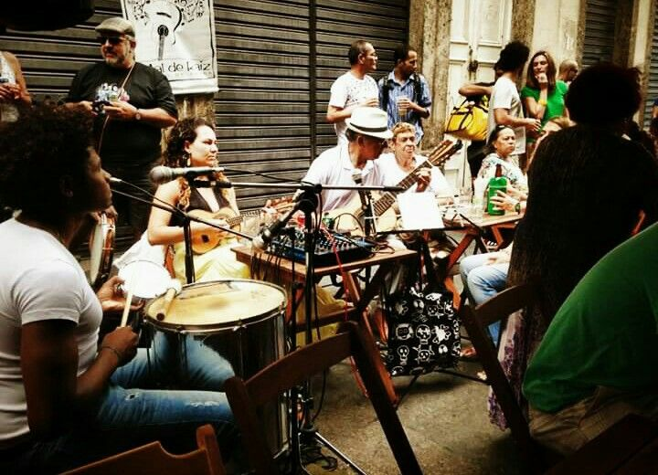
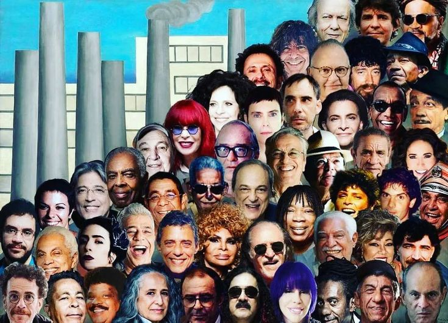
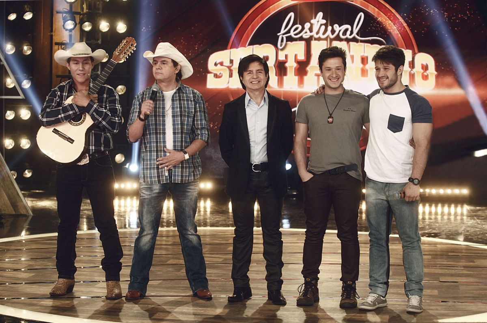
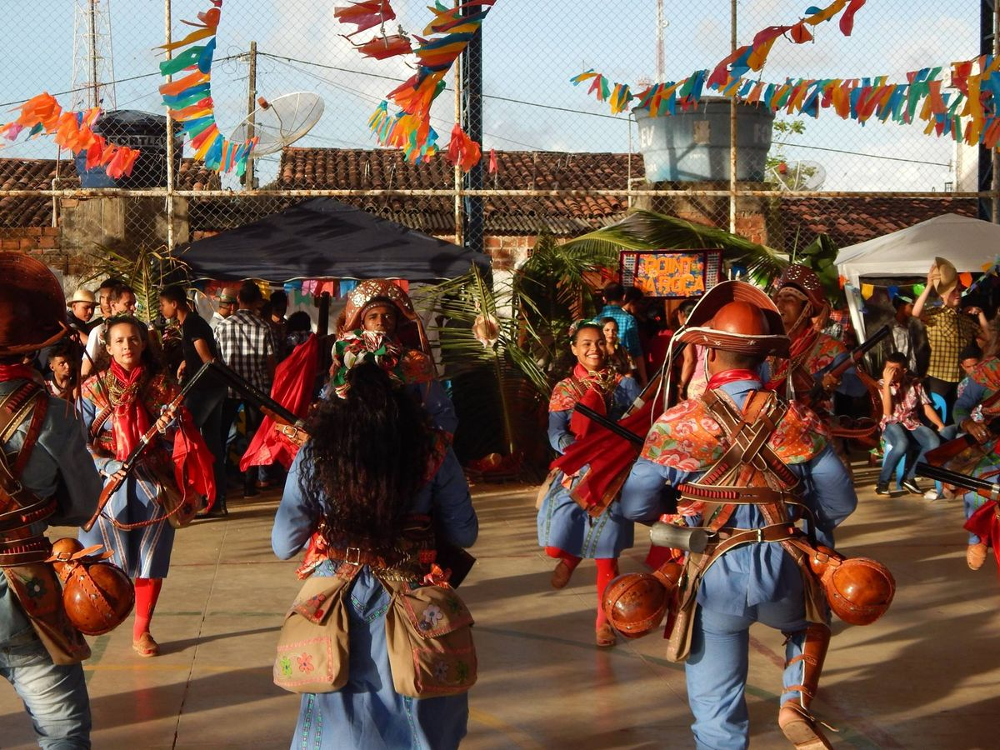
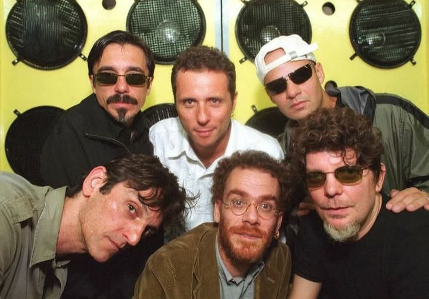
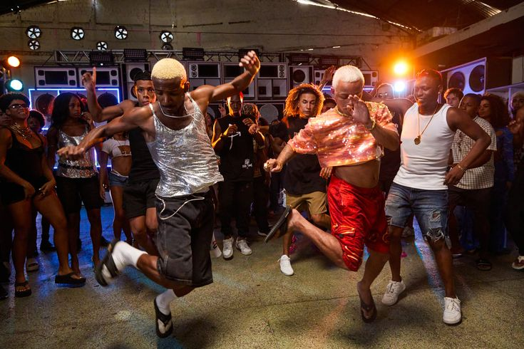

Samba
O samba é um dos gêneros mais importantes e conhecidos da música brasileira. Ele surgiu a partir de tradições africanas trazidas pelos povos escravizados e se desenvolveu principalmente no Rio de Janeiro.
O ritmo é marcado pela percussão e pela dança, sendo muito presente em festas populares e no Carnaval. Existem vários tipos de samba, como samba-enredo, samba de raiz e pagode.
Além de ser música, o samba também representa identidade cultural e história social do Brasil.

MPB (Música Popular Brasileira)
A MPB ficou forte a partir da década de 1960 e reúne vários estilos diferentes dentro de um mesmo movimento musical.
As músicas costumam ter letras mais trabalhadas, falando sobre sentimentos, política, sociedade e cultura. Muitos festivais ajudaram a divulgar esse estilo.
É um gênero muito respeitado por causa da qualidade das composições e da mistura de ritmos brasileiros com influências internacionais.

Sertanejo
O sertanejo começou com músicas ligadas à vida no campo e às tradições do interior do Brasil. As letras falavam de natureza, amor e cotidiano rural.
Com o tempo surgiu o sertanejo moderno, que mistura elementos do pop e é muito popular nas rádios e na internet.
Hoje é um dos estilos mais ouvidos do país e movimenta grandes shows e festivais.

Forró
O forró é muito popular no Nordeste e está ligado a festas tradicionais e danças em dupla.
Os instrumentos mais usados são a sanfona, a zabumba e o triângulo, que criam o som característico do gênero.
Existem variações como forró pé-de-serra, eletrônico e universitário, mostrando que o estilo também evoluiu com o tempo.

Rock Brasileiro
O rock brasileiro ganhou força principalmente nos anos 1980, com bandas que adaptaram o rock internacional para a realidade e a língua portuguesa.
Muitas músicas falavam sobre juventude, política e mudanças sociais. Esse período marcou bastante a cultura musical do país.
Até hoje várias bandas de rock nacional continuam influentes e com fãs de diferentes idades.

Funk Brasileiro
O funk brasileiro surgiu nas comunidades urbanas e cresceu muito com a ajuda da internet e das redes sociais.
O estilo tem batidas fortes e letras que falam sobre o cotidiano, festas e realidade social.
Apesar de gerar debates, é um dos gêneros mais ouvidos atualmente e tem grande impacto cultural.
